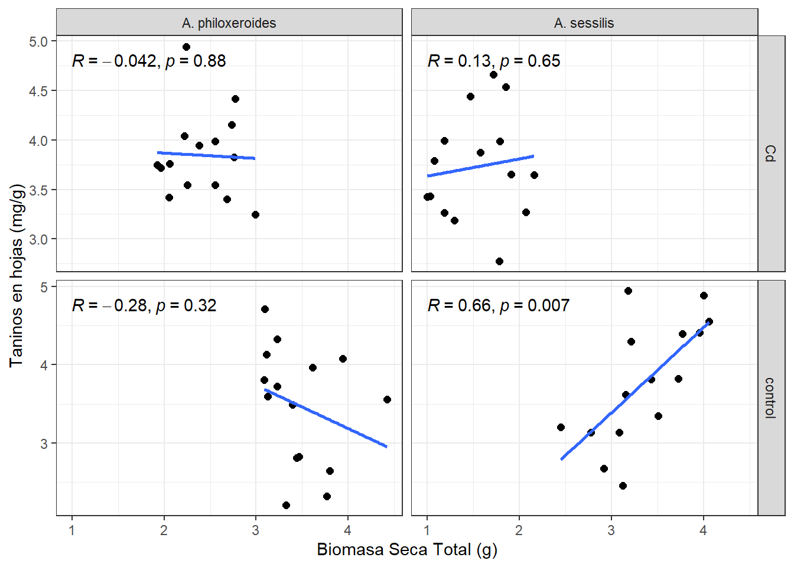
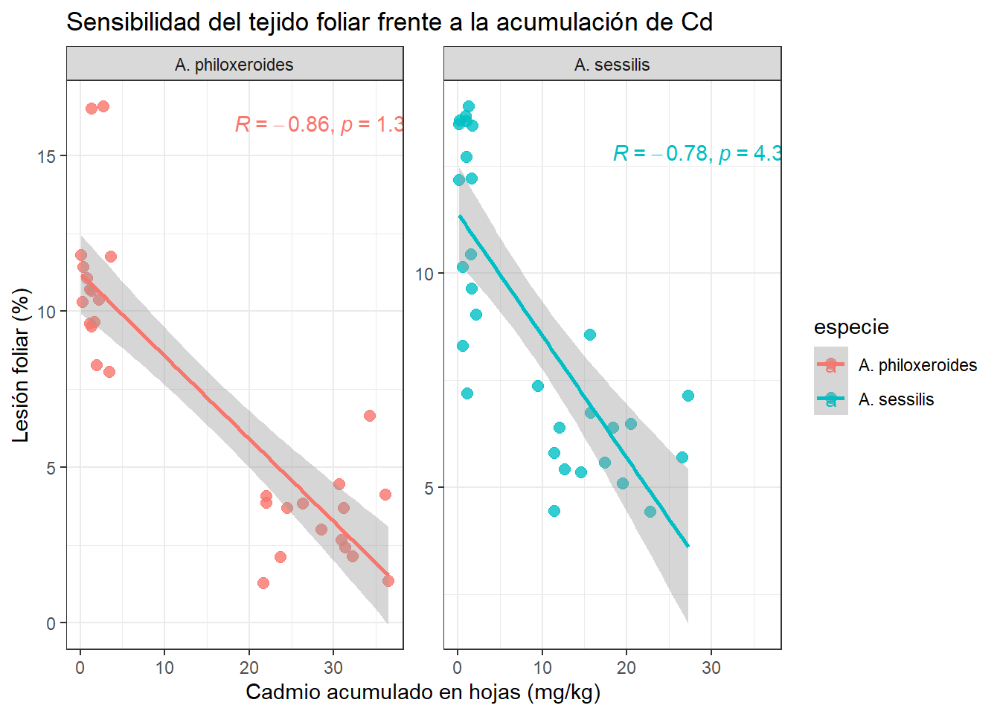

<<<<<<< HEAD
=======
>>>>>>> 3743caf96908f317cc754531b6b5100230765a57
<<<<<<< HEAD
=======
>>>>>>> 3743caf96908f317cc754531b6b5100230765a57
Avance Informe Final
Autor/a
Jair Barrera
Fecha de publicación
24 de junio de 2026
Objetivo
Se busca dar respuesta a la siguiente pregunta: ¿Difiere el impacto del Cadmio (Cd) sobre la producción de biomasa y la acumulación de metabolitos secundarios foliares al comparar la especie invasora (Alternanthera philoxeroides) con la especie nativa (Alternanthera sessilis)?.
Y cumplir los siguientes objetivos:
Analizar la asignación de biomasa: Describir y comparar la distribución de la masa seca entre la raíz y el tallo (relación raíz/tallo) en ambas especies bajo condiciones de control y tratamiento con cadmio.
Explorar los costos de tolerancia: Determinar la relación existente entre la inversión en taninos y el crecimiento global (biomasa seca total) para identificar posibles costos energéticos de defensa en cada especie.
Evaluar el daño físico frente a la absorción: Caracterizar el porcentaje de área foliar lesionada en función de la concentración de cadmio acumulado en las hojas.
Hipótesis
Para la Biomasa Total:
\(H_0\) (Hipótesis Nula): El efecto de la exposición al Cadmio sobre la producción de biomasa es idéntico en A. philoxeroides y A. sessilis.
\(H_1\) (Hipótesis Alternativa): El efecto de la exposición al Cadmio sobre la producción de biomasa difiere significativamente entre ambas especies.
Para la Concentración de Taninos:
\(H_0\) (Hipótesis Nula): La respuesta en la acumulación de taninos foliares ante la presencia de Cadmio no difiere entre la especie invasora (A. philoxeroides) y la especie nativa (A. sessilis).
\(H_1\) (Hipótesis Alternativa): La acumulación de taninos foliares inducida por la presencia de Cadmio difiere significativamente entre ambas especies.
Análisis inferencial
<<<<<<< HEAD
Para dar respuesta a la pregunta central se busca realizar dos modelos anova independientes (Uno para biomasa y otro para taninos) siempre y cuando se cumplan los supuestos.Si la interacción es significativa, se procede con una prueba post-hoc de Tukey (Tukey HSD) para comparar pares específicos.
Df Sum Sq Mean Sq F value Pr(>F)
especie 1 3.594 3.594 22.56 1.46e-05 ***
tratamiento 1 31.047 31.047 194.90 < 2e-16 ***
especie:tratamiento 1 2.153 2.153 13.52 0.000532 ***
=======
Para dar respuesta a la pregunta central se busca realizar dos modelos anova independientes (Uno para biomasa y otro para taninos).Si la interacción es significativa, se procede con una prueba post-hoc de Tukey (Tukey HSD) para comparar pares específicos.
Se encontró un efecto de interacción altamente significativo entre la especie y el tratamiento con cadmio sobre la producción de biomasa seca total (F = 13.52, p < 0.001). Este resultado confirma que el efecto inhibitorio del cadmio sobre la biomasa no afecta por igual a ambas especies. Asimismo, se detectaron diferencias significativas independientes tanto para el factor especie.
Tukey multiple comparisons of means
95% family-wise confidence level
<<<<<<< HEAD
Fit: aov(formula = masa_total_g ~ especie * tratamiento, data = datos_eda)
$`especie:tratamiento`
=======
Fit: aov(formula = Masa_total_g ~ Especie * Tratamiento, data = datos_eda)
$`Especie:Tratamiento`
>>>>>>> 3743caf96908f317cc754531b6b5100230765a57
diff lwr upr
A. sessilis:Cd-A. philoxeroides:Cd -0.8683473 -1.2542443 -0.4824503
A. philoxeroides:control-A. philoxeroides:Cd 1.0598340 0.6739370 1.4457310
A. sessilis:control-A. philoxeroides:Cd 0.9491853 0.5632883 1.3350823
A. philoxeroides:control-A. sessilis:Cd 1.9281813 1.5422843 2.3140783
A. sessilis:control-A. sessilis:Cd 1.8175327 1.4316357 2.2034297
A. sessilis:control-A. philoxeroides:control -0.1106487 -0.4965457 0.2752483
p adj
A. sessilis:Cd-A. philoxeroides:Cd 0.0000011
A. philoxeroides:control-A. philoxeroides:Cd 0.0000000
A. sessilis:control-A. philoxeroides:Cd 0.0000001
A. philoxeroides:control-A. sessilis:Cd 0.0000000
A. sessilis:control-A. sessilis:Cd 0.0000000
A. sessilis:control-A. philoxeroides:control 0.8723229
La prueba de comparaciones post-hoc confirmó que en condiciones de control no existieron diferencias estadísticamente significativas en la biomasa seca total entre ambas especies (p = 0.872). Si bien la exposición a cadmio indujo una disminución significativa de la biomasa en ambas plantas, la magnitud del impacto difirió entre ellas: Alternanthera sessilis sufrió una pérdida promedio de 1.82g respecto a su control, mientras que Alternanthera philoxeroides registró una reducción de 1.06g. En consecuencia, bajo tratamiento con cadmio, la especie invasora (A. philoxeroides) conservó una biomasa promedio significativamente mayor en comparación con la especie nativa (A. sessilis) (diferencia = -0.87g, evidenciando un desempeño vegetativo superior bajo estrés por metales pesados.
<<<<<<< HEAD
Shapiro-Wilk normality test
data: residuals(anova_taninos)
W = 0.98472, p-value = 0.6557
Levene's Test for Homogeneity of Variance (center = median)
Df F value Pr(>F)
group 3 2.5472 0.06503 .
56
---
Signif. codes: 0 '***' 0.001 '**' 0.01 '*' 0.05 '.' 0.1 ' ' 1
Df Sum Sq Mean Sq F value Pr(>F)
especie 1 0.124 0.1238 0.299 0.587
tratamiento 1 0.381 0.3813 0.921 0.341
especie:tratamiento 1 0.650 0.6499 1.570 0.215
Residuals 56 23.181 0.4140
El análisis de varianza para la concentración de taninos foliares no mostró un efecto de interacción significativo entre la especie y el tratamiento. De igual forma, no se observaron diferencias estadísticamente significativas para los efectos principales de especie ni de tratamiento. En consecuencia, los promedios globales de concentración de taninos se mantuvieron homogéneos entre los grupos evaluados. Este es un resultado que se contrastará con la relación mostrada en el informe exploratorio.
Objetivo 1:
Shapiro-Wilk normality test
data: residuals(anova_rt)
W = 0.9664, p-value = 0.09714
Levene's Test for Homogeneity of Variance (center = median)
Df F value Pr(>F)
group 3 1.7852 0.1605
56
Df Sum Sq Mean Sq F value Pr(>F)
especie 1 0.0153 0.01533 0.946 0.335
tratamiento 1 0.2911 0.29114 17.973 8.46e-05 ***
especie:tratamiento 1 0.0090 0.00896 0.553 0.460
Residuals 56 0.9071 0.01620
---
Signif. codes: 0 '***' 0.001 '**' 0.01 '*' 0.05 '.' 0.1 ' ' 1
Tukey multiple comparisons of means
95% family-wise confidence level
Fit: aov(formula = datos_eda$`relacion_r/t` ~ especie * tratamiento, data = datos_eda)
$tratamiento
diff lwr upr p adj
control-Cd -0.1393183 -0.2051491 -0.07348744 8.46e-05
Aquí solo muestra diferenccia significativa en el tratamiento.
objetivo 2

Figura 1: Análisis de correlación lineal entre la biomasa seca total (g) y la concentración de taninos foliares (mg/g) en Alternanthera philoxeroides y Alternanthera sessilis bajo condiciones de control y exposición a cadmio (Cd). Se incluye el coeficiente de correlación de Pearson (R) para cada escenario.
objetivo 3

Call:
lm(formula = `lesión_foliar_(%)` ~ `Cd_hoja_mg/g` * especie,
data = datos_eda)
Residuals:
Min 1Q Median 3Q Max
-4.2015 -1.3112 -0.3675 1.4072 6.0932
Coefficients:
Estimate Std. Error t value Pr(>|t|)
(Intercept) 11.22171 0.59453 18.875 < 2e-16 ***
`Cd_hoja_mg/g` -0.26582 0.02870 -9.262 6.83e-13 ***
especieA. sessilis 0.17621 0.82973 0.212 0.833
`Cd_hoja_mg/g`:especieA. sessilis -0.01955 0.05400 -0.362 0.719
---
Signif. codes: 0 '***' 0.001 '**' 0.01 '*' 0.05 '.' 0.1 ' ' 1
Residual standard error: 2.212 on 56 degrees of freedom
Multiple R-squared: 0.7035, Adjusted R-squared: 0.6876
F-statistic: 44.28 on 3 and 56 DF, p-value: 8.446e-15